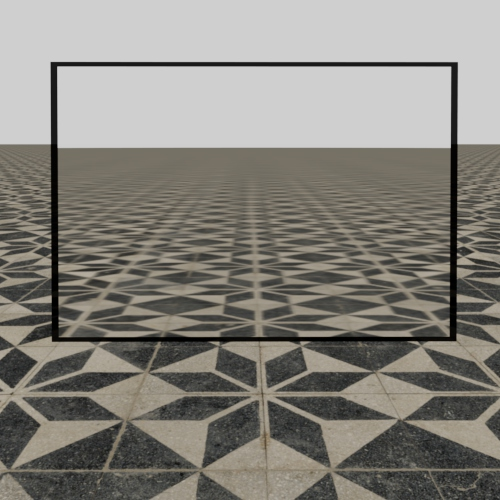
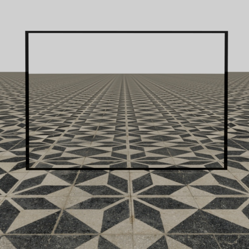

5.2.2
17Nov 2022
MtoA 5.2.2 introduces Arnold 7.1.4.0 and is a minor feature release bringing improvements Render View log window, OSL editor and a new imager import/export workflow
Installation
- Download the Arnold for Maya plugin
- Follow these installation instructions.
Maya Plugins Compatibility
MtoA 5.2.2 works with the following Maya plugins
- Bifrost Extension for Maya 2.4.0.0
- MayaUSD 0.18.0 (USD 21.11)
Enhancements
- Improved Log Window in Render View: The log window for Arnold Render view has been enhanced with a new search bar and color highlighting (ARNOLD-212)
- Improved OSL Code Editor behaviour: the OSl editor for the aiOSL node has been improved to allow better felxibility when editing code. It no long re-compiles after each edit and will allow the user to save work-in-progress code. (MTOA-1152)
- Add support for Export and Import of imager graphs: The imager editor in ARV and the Render Settings now support the import and export of imagers as .usd or .ass files for sharing with other scnes or other Arnold plugins. (MTOA-1167)
Metadata file mtoa.mtd moved to bin/arnold.mtd : the Arnold node metadata file have been relocated from
MTOA_ROOT/mtoa.mtdtoMTOA_ROOT/bin/arnold.mtdthis means that arnold core will load the metadata directly and can be loaded bykickwithout addtional calls (MTOA-647)Automatic generation of TX files: Tx textures are now generated on demand, when the texture is first accessed during rendering, instead of generating all Tx files of the scene before the render starts. (MTOA-1184)
Hair melanin and redness: The standard_hair shader's
melaninandmelanin_rednessparameters as well as theAidEonBSDF()function'sabsorptionparameter are now being referenced in a linear sRGB color space so that the direct lighting results match when switching to other rendering color spaces such as ACEScg. Themelanin_rednessparameter will also now produce a more correct-looking red tint in ACEScg. (ARNOLD-7585).
Arnold 7.1.3.2 Arnold 7.1.4.0 Sharp textures through reflections and refractions: Textures seen through specular reflections and refractions, particularly when there is low roughness, such as with clear windows and mirrors should now look correctly sharper. This can result in higher resolution texture mipmap levels being loaded in memory, so scenes that were affected by this can see an increase in texture cache usage. (ARNOLD-5632)
  Arnold 7.1.3.2 Arnold 7.1.4.0 MaterialX 1.38.5: Arnold now ships with an updated MaterialX version, see the full release notes.(ARNOLD-12448)
Autodesk Analytics Program: A newer version of the Autodesk Analytics Program (ADP) has been integrated into Arnold. This brings stability and performance improvements, including in situations where Arnold is used without internet access. If Arnold can identify the user with their Autodesk account, opt-in settings will automatically download from the internet, simplifying usage across multiple machines. Otherwise a one-time dialog window will appear if the computer does not have preexisting Analytics opt-in information. No dialog window will appear when running
kick -dw, making it safe to use on headless render nodes.Warn when adaptive sampling is enabled and there is no RGBA AOV: Adaptive sampling will only run on the RGBA (beauty) AOV. If there is no AOV with the name RGBA, then adaptive sampling is disabled. This can be particularly confusing when IPR has a display window and so adaptive sampling is used, but the batch render is done without display (
kick -dwfor instance) and adaptive sampling stopped working. We now emit a warning when this occurs so this issue can be easily detected. (ARNOLD-12521)USD Enhancements
USD 22.08 The arnold USD procedural now use USD 22.08.
MaterialX support: MaterialX shaders are now supported, both in Hydra and in the usd procedural. usd#1181
Alembic support: Alembic references and payloads are now supported by the usd procedural. ARNOLD-12593
Imager support Imagers can now be rendered in Hydra and the procedural through an imager node graph connected to the RenderSettings "imager" attribute. usd#1305
Skinning improvements UsdSkel Skinning can now support instances and was made more efficient. Motion blur is now correct in both hydra and the procedural. usd#1291 usd#1078
Support shader connections to mesh lights It is now possible to connect shading graphs to a mesh light color. This can be done by connecting an ArnoldNodeGraph primitive to the mesh attribute primvars:arnold:light:shaders. usd#1294
Skinning improvements UsdSkel Skinning can now support instances and was made more efficient. Motion blur is now correct in both Hydra and the procedural. usd#1291 usd#1078
Camera improvements: dataWindowNDC support has been improved for batch rendering. It now adds more pixels to the output image instead of simply adjusting the frustum, when using husk or kick usd#1271 The horizontal and vertical aperture offset attributes in the cameras are now supported, both in Hydra and in the procedural. This enables features like render region. usd#1225
Cylinder lights: Cylinder lights are now supported in the usd procedural. usd#1231
Render settings improvements: We can now set in the usd file which RenderSetting primitive will control the render by pointing the layer metadata attribute renderSettingsPrimPath to the RenderSetting primitive. usd#1235 The aov_shader attribute of a RenderSettings primitive can now point to multiple ArnoldNodeGraph. They have to be separated by a space. usd#1321 "Abort on error" is now declared as a Hydra render setting, and can be controlled in usd_view or mayaUSD. usd#1259
RenderVar improvements The attribute "arnold:filter" of the RenderVar primitive now defaults to box instead of closest_filter. usd#1313 RenderVar aov name can be called "color" for the beauty, it was supported in the render delegate and is now supported in the procedural. usd#1311
Improved default sampling values in Hydra: The default sample values were inconsistent between interactive Hydra versus batch rendering (e.g. with husk). This was improved, and now matches the other Arnold plugins. This is an incompatible change for scenes where sampling values were left to default usd#1006
Shader outputs registered in Sdr: The output attributes for Arnold shaders are now registered, along with their type, in the Sdr registry. This allows for applications / plugins to expose shading trees with Arnold shaders with the correct types usd#1211
Environment variable to debug Hydra: In order to help debugging Hydra renders, an environment variable HDARNOLD_DEBUG_SCENE can now be set to a .ass scene filename, allowing the Arnold scene data to be saved out as the render starts usd#1266
Incompatible changes
Hair melanin and redness in ACEScg: The changes to
standard_hairshader'smelaninandmelanin_rednessin ACEScg are potentially look-breaking. Theabsorptionparameter for theAidEonBSDF()is now expected to be in a linear sRGB color space. Those changes can be reverted through theenable_deprecated_hair_absorptionrender option (ARNOLD-7585).Autodesk Analytics Program: The following API should no longer be used as Arnold will now create the opt-in dialog window. In many cases they have been marked deprecated and will be removed in a major Arnold release. All these functions can be replaced by
AiADPDisplayDialogWindow()andAiADPDisableDialogWindow():AI_API AI_DEPRECATED bool AiADPIntroWasShown(); AI_API AI_DEPRECATED void AiADPSetIntroShown(); AI_API AI_DEPRECATED void AiADPDialogStrings(AtParamValueMap&, const char*); AI_API void AiADPSetOptedIn(bool wants_optin); AI_API bool AiADPIsOptedIn();Autodesk network licensing: Autodesk Network License Manager (NLM) servers have to be updated to version 11.18, otherwise checking out a network license throws a
Generic license checkout error (22).
Bug Fixes
- MTOA-659 - MTOA always prints a startup log
- MTOA-313 - No log produced when using AVP and never opening ARV
- MTOA-1177 - Incorrect transform when using originOffset and curvecollector
- MTOA-1131 - ARV and Arnold Viewport do not refresh during GPU render when using a denoiser
- ARNOLD-12647 - Log window should only show output of Render View or Viewport Renders
- MTOA-1152 - OSL recompiles automatically while being edited
- ARNOLD-12660 - Volume rendering performance regression in Arnold 7.1.3
- ARNOLD-11448 - Crash stacktrace is not always printed
- ARNOLD-12590 - [GPU] Single channel 8-bit textures are too bright
- ARNOLD-12675 - [Maketx] maketx tool doesn't recognize the --ignore-unassoc parameter
- ARNOLD-12619 - [MaterialX] Channel connections not exported when exporting MaterialX shading networks
- ARNOLD-12667 - [OCIO] Slow call to the OCIO color manager when reading raw textures in OSL
- usd#1278 Support visibility overrides on instances in the render delegate
- usd#1336 Fix empty ProductName rendering as .exr
- usd#1331 Fix motion blur sampling on skinned instances
- usd#1329 Fix inverted motion blur in the render delegate when using velocities
- usd#1315 Fix interpretation of primvars arrays with constant interpolation
- usd#1309 Fix RenderVar's filter width not translated properly in the procedural
- usd#1306 Allow to render deepexr RenderProduct with kick
- usd#1282 Don't set UsdUvTexture uvset when st coordinates are used
- usd#1281 Fix crash when a volume prim density field is invalid
- usd#1232 Set output to half precision for RenderVars with half types
- usd#1214 Make Sdr node discovery results consistent across renderers
System Requirements
- Maya 2020, 2022 or 2023
- Windows 10 or later, with the Visual Studio 2019 redistributable.
- Linux with at least glibc 2.17 and libstdc++ 4.8.5 (gcc 4.8.5). This is equivalent to RHEL/CentOS 7.
- macOS 10.13 or later.
- CPUs need to support the SSE4.1 instruction set. Apple Mac models with M series chip are supported under Rosetta 2 mode.
- GPU rendering works on Windows and Linux only and requires an NVIDIA GPU of the Ampere, Turing, Volta, Pascal, or Maxwell architecture. We recommend using the 495.46 or higher drivers on Linux and 511.09 (Quadro), 511.09 (GeForce), or higher on Windows. See Arnold GPU for more information.
- Optix™ denoiser requires an NVidia GPU with CUDA™ Compute Capability 5.0 and above.
The driver type must be set to DCH.

In the driver page, select "Windows Driver Type:" DCH
The cache will also need to be re-populated after installing a new Arnold version, updating to a new NVIDIA driver , or changing the hardware configuration of GPUs on the system. More information can be found here .